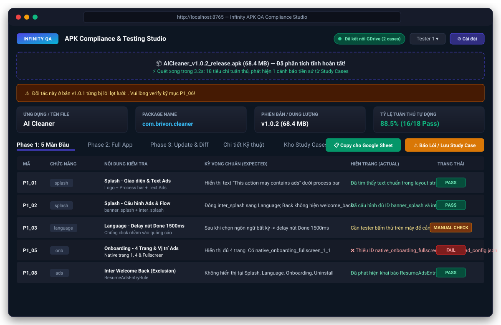
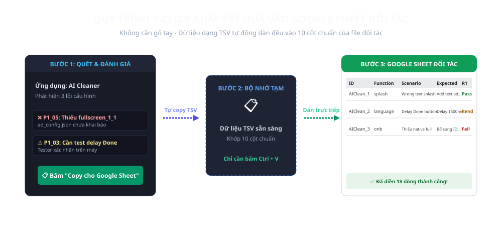
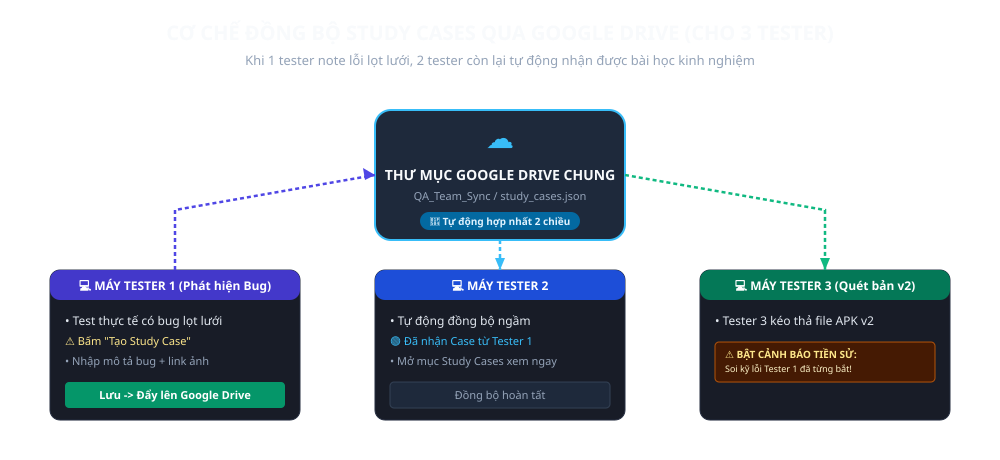

Dành cho: Team Tester KOG Studio | Định dạng hỗ trợ: APK đối tác 50 – 100 MB

Bạn chỉ cần tải file KOG_APK_Tester_Studio.exe về máy tính và bấm đúp chuột để chạy (hoặc dùng Chay_KOG_APK_Tester_Studio.bat).
http://localhost:8765.
1. Bấm nút xanh 📋 Copy cho Google Sheet trên màn hình.
2. Mở file Google Sheet của đối tác (bảng có các cột: ID, Function, Test Scenario Group, Actual, Expected, Round 1,...).
3. Chọn ô đầu dòng (cột A) và bấm Ctrl + V -> Toàn bộ kết quả sẽ được dán ngay ngắn vào từng cột!
⚙️ Cài đặt -> Nhập Gemini API Key để kích hoạt trí tuệ nhân tạo đàm thoại chuyên sâu.Bấm nút ⚠️ Báo Lỗi Lọt Lưới & Dạy Hệ Thống:
Lưu & Dạy Hệ Thống Học.
📁 Kho Study Cases (GDrive) để mở ngay thư mục dùng chung trên web.⚙️ Cài đặt -> Nhập đường dẫn thư mục Google Drive trên máy bạn (nếu đã cài Google Drive for Desktop) để tự động đồng bộ file.